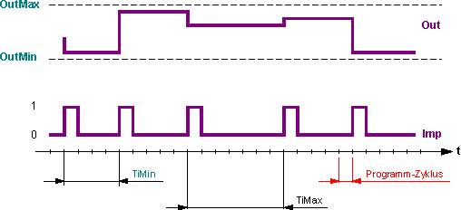
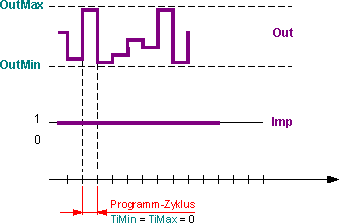
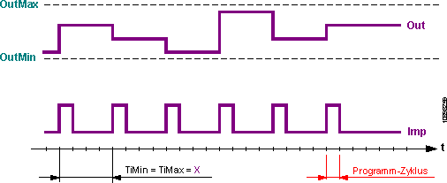

[RANDOM] 随机数生成
功能块 RANDOM 提供随机输出信号。
RANDOM 提供随机输出信号。新值的发布可以通过以下方式确定：随机或恒定的时间间隔。可以限制输出信号的值范围。
功能块 RANDOM 生成实数值输出信号 [Out] 和二进制输出信号 [Imp]。
[Out] 的实际值在值范围 [OutMin]、[OutMax] 内随机分布。
[Out] 和 [Imp] 的输出值以 [TiMin]、[TiMax] 之间的随机间隔或以恒定间隔（例如每 10 秒）发出。
Random value [Out] at intervals between [TiMin] and [TiMax].
如果 [TiMin] < [TiMax]，则最早在 [TiMin] 之后、最晚在 [TiMax] 之后在输出 [Out] 处发出新的随机值。同时发出一个新脉冲[Imp]。
每个脉冲持续一个程序周期。

Random value [Out] in each program cycle.
如果 [TiMin] = [TiMax] = 0，则在每个程序周期中在输出 [Out] 处发出新的随机值。二进制输出信号 [Imp] 恒定：[Imp] = 1。

Random value at output [Out] at constant intervals
- Prerequisite: x <> 0
如果[TiMin] = [TiMax] = x，则总是在时间x之后发出新的随机值[Out]。同时发出一个新脉冲[Imp]。
每个脉冲持续一个程序周期。

输入 | 描述 | 数据类型 | 默认值 |
|---|---|---|---|
EnFnct | Enable function 启用该功能。 | 布尔值 | 1 |
0 - 该功能被禁用。 | |||
OutMax | Maximum output value [Out] 的最大默认值。 | 真实的 | 100.0 |
OutMin | Minimum output value [Out] 的最小默认值。 | 真实的 | 0.0 |
TiMax | Maximum time 最晚在该最大值之后生成一个新值 [Out]。时间。 | 时间 | 0 ms |
0 - 采样时间持续一个程序周期。 | |||
TiMin | Minimum time 最早在此分钟之后会生成一个新值 [Out]。时间。 | 时间 | 0 ms |
0 - 最短采样时间持续一个程序周期。 | |||
输出 | 描述 | 数据类型 | 默认值 |
|---|---|---|---|
Out | Output | 真实的 | 0.0 |
Imp | Impulse [TiMin]<>[TiMax] - 每个脉冲持续一个程序周期。 | 布尔值 | 0 |
0 - Off | |||
RANDOM 允许以下应用：
- Generate time-random pulses e.g. for random switch-on or switch-off of any functions or components.
- Generate a random value for further use.